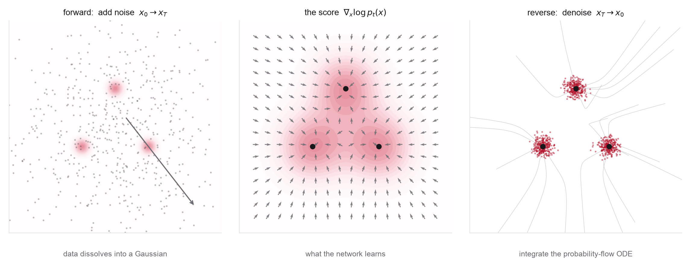

1Orientation
Forward noising processes, the score function, reverse-time SDEs, the probability-flow ODE, denoising score matching, and the EDM design space that makes all of it train. Then the same machinery on 3D molecules, where the score is an equivariant force field.

Week 1 built generation as deterministic transport: a velocity field, its flow map, and the continuity equation that moves density along it. Week 2 keeps every piece of that picture and adds stochasticity. Fix a forward process that gradually corrupts a data point with Gaussian noise until, at the final time, almost nothing of the data is left and the distribution is close to a standard Gaussian you can sample trivially. Diffusion is what you get by learning to undo that corruption. Remarkably, the time reversal of a noising diffusion is itself a diffusion, and the single missing quantity needed to run it backward is the score \(\nabla_x\log p_t(x)\), the gradient of the log-density of the noised data. The score is not itself the reverse velocity; it is the unknown field that, combined with the known forward dynamics, builds the reverse velocity or the reverse stochastic drift. Everything else, ODE integration, divergence, trajectory geometry, carries straight over from Week 1.
Two facts make this more than a reparameterization of Week 1. First, with the exact score, a correctly initialized terminal law, and exact integration, the same forward process gives two reverse constructions: a stochastic reverse-time SDE that re-injects noise at every step, and a fully deterministic probability-flow ODE. They share the same one-time marginals, but their trajectories and numerical-error properties differ, so the stochastic-versus-deterministic choice is an empirical, solver-dependent tradeoff rather than a universal rule. Second, the score has a free training signal. Standard training reduces to a tractable denoising regression that needs neither likelihood evaluation nor a reverse solver in the loop: corrupt a clean sample with known noise and regress the network onto the posterior-mean denoising direction. At the population optimum this recovers the conditional mean of the noise given the noised sample, which is algebraically the marginal score; it does not recover the particular noise draw. (In DDPM this regression is motivated by a decomposition of the variational bound, with the commonly used simplified loss changing its weighting.) This is the smoothing idea from Week 1 Problem 1, now load-bearing.
Why this matters for science is unusually direct here. If the data distribution is a Boltzmann distribution \(p \propto e^{-\beta_{\mathrm{phys}} U(x)}\) over full Cartesian molecular configurations, then the clean-data score is, up to inverse temperature \(\beta_{\mathrm{phys}}\), the physical force field \(-\nabla U\). The correspondence is exact only at zero noise and in full Cartesian coordinates: at \(t>0\) the learned score is the gradient of a smoothed effective density, and in internal or coarse-grained coordinates it becomes a mean force carrying Jacobian and entropic terms. Forward noising as heating and reverse generation as annealing are distributional analogies, not physical temperature protocols, and a model trained on equilibrium snapshots targets equilibrium statistics, not molecular kinetics or transition rates. Even so, a diffusion model is an amortized sampler for an energy landscape, and the questions that haunt molecular simulation, multimodality, rare basins and their relative statistical weights, are exactly the questions that decide whether the generator is any good. The problems this week are built on that correspondence, from the Müller-Brown surface to equivariant generation of 3D structures.
One naming collision to fix up front. EDM means two different papers this week. Karras et al. (2022), Elucidating the Design Space, is the image-side framework for preconditioning, schedules, and sampler design. Hoogeboom et al. (2022), Equivariant Diffusion for Molecule Generation, is the 3D-molecule model. Both appear below; the pages always disambiguate which one is meant.
2Learning goals
- Write down a forward noising SDE and its perturbation kernel, and state how the score builds the reverse-time SDE and the probability-flow ODE that undo it.
- Derive the denoising score matching objective and show that at the population optimum it recovers the conditional mean of the noise \(\mathbb E[\epsilon\mid x_t]\), a fixed rescaling \(\nabla_x\log p_t = -\mathbb E[\epsilon\mid x_t]/\sigma_t\) of the marginal score.
- Read the EDM design space as conceptually separable, largely modular design choices, preconditioning, noise distribution, loss weighting, discretization, and sampler, whose best settings can still interact.
- Interpret the clean-data score of a Boltzmann distribution as a force field (and the noised score as a smoothed mean force), and reason about why multimodality and basin weights are the hard part for molecules and materials.
- Explain why a molecular coordinate score should be equivariant under atom permutations and the chosen rigid-motion group; distinguish \(E(3)\) from \(SE(3)\); and explain how the zero-center-of-geometry subspace removes the global translation gauge.
3Methods readings
Read roughly in order, these trace one idea from its origins to the framework that makes it train at scale. Hyvärinen's score matching supplies the objective that sidesteps the unknown normalizing constant; Sohl-Dickstein frames generation as reversing a diffusion. DDPM turns that into a practical denoising regression and the model that started the modern wave, while NCSN arrives at the same place from score matching and annealed Langevin. The score-SDE paper is the hinge: it places both in one common framework, as the variance-preserving (VP) and variance-exploding (VE) SDEs, and hands you Anderson's reverse-time SDE and the probability-flow ODE. EDM then lays out the surrounding design choices directly, and DDIM isolates the deterministic-sampling idea. Aim to reproduce the reverse-time and probability-flow identities and to see DDPM and NCSN as different choices of probability path, parameterization, weighting, and sampler within one continuous-noise design space, rather than to memorize each schedule. The lecture notes distill all of this into one place, with figures and a live sampler. Section pointers below follow each paper's own numbering.
Continues the single source of notation from Week 1 into stochastic processes: §2.2 builds the diffusion models, §4.1 the conditional and marginal score functions, §4.2 sampling with SDEs, and §4.3 score matching, with Appendix B the optional Fokker-Planck proof. Note the convention: time runs from \(t=0\) at the noise end to \(t=1\) at the data end, so for the conventional data-to-noise reverse-time formula, Score-SDE §3.2 is the cleaner source.
The foundational objective, worth reading before NCSN. §§1-2 derive the integration-by-parts trick that eliminates both the unknown data score and the normalizing constant, leaving a tractable loss. Everything called "score matching" later is a practical descendant of this one identity.
Where the idea begins: generation as the learned reversal of a diffusion. A short historical skim of §1.1 and §§2.1-2.4 (forward trajectory, reverse trajectory, model probability, training) is enough to see DDPM's lineage.
The paper that made diffusion work. A fixed Gaussian forward chain, a variational bound that collapses to a clean denoising regression, and the widely used \(\epsilon\)-prediction parameterization. Read §2 and §§3.1-3.4 with Algorithms 1-2 for the closed-form forward marginal \(q(x_t\mid x_0)\), the reverse parameterization, the variational decomposition, the simplified objective, and training and sampling. Note that the simplified loss deliberately changes the variational weighting.
The other road to the same destination. Estimate the score at many noise levels with denoising score matching, then sample with annealed Langevin dynamics. Read §§2.1-2.2 (score matching and Langevin), §§3.1-3.2 (the manifold and low-density difficulties), and §§4.1-4.3 (the networks, training, and annealed Langevin). The key point: with manifold-like or poorly smoothed data, score estimation is unreliable in low-density regions and single-scale Langevin mixes very slowly, and a ladder of noise levels fixes both estimation and exploration.
The unification. The continuous limits of DDPM and SMLD/NCSN become the VP and VE SDEs within one common framework, and Anderson's reverse-time SDE plus the probability-flow ODE fall out as the two ways to integrate it backward. Read §§2.1-2.2 (SMLD and DDPM), §3.1 (forward perturbation), §3.2 (reverse-time SDE), §3.3 (score estimation), §3.4 (VE/VP/sub-VP), and §§4.1-4.3 (solvers, predictor-corrector, probability-flow ODE and likelihood). The central paper of the week; reproduce the reverse-time and probability-flow statements.
The engineering that turned diffusion from finicky into reliable. Treats preconditioning, the training noise distribution, loss weighting, time discretization, and the sampling algorithm as conceptually separable, largely modular design choices, whose best settings can still interact. Read §2 (common framework), §3 (deterministic sampling), §4 (stochastic sampling), and §5 (preconditioning and training). Problem 2 derives the preconditioning. Read it for the mindset: these are knobs tuned to the data, not laws.
Directly relevant to this week's deterministic-versus-stochastic theme. A non-Markovian forward construction that shares DDPM's training objective but admits a fast, deterministic sampler with an ODE interpretation. Read §§3.1-3.2 (the construction and shared objective) and §§4.1-4.3 (deterministic sampling, acceleration, and the ODE connection).
The cosine schedule and learned variances (Improved DDPM, §§2-3); advanced training-dynamics fixes such as magnitude-preserving layers and post-hoc EMA (EDM2, architecture-focused, treat as advanced); and a proof-oriented textbook backup (Tang & Zhao §2 time reversal, §3 VE/VP examples, §4 score matching, §6 ODE samplers). Skim once the core papers are solid.
Two careful blog walkthroughs. In Song's, read "Score function and score matching," "Langevin dynamics," "Pitfalls," "Multiple noise scales," then the SDE headings (perturbing data, reversing the SDE, estimating scores, solving the reverse SDE, the probability-flow ODE). In Weng's, read "Forward diffusion process," "Reverse diffusion process," "Parameterization of \(L_t\)," "Simplification," and "Connection with NCSN." Good for filling gaps before the derivation session.
One dictionary: score, noise, and denoiser. With \(x_t=\alpha_t x_0+\sigma_t\epsilon\), the three objects every paper trains are linear reparameterizations of one another: \[ s_t(x_t)=-\frac{\mathbb E[\epsilon\mid x_t]}{\sigma_t}, \qquad D_t(x_t)=\mathbb E[x_0\mid x_t]=\frac{x_t+\sigma_t^2\,s_t(x_t)}{\alpha_t}. \] A model may predict the noise \(\epsilon\), the score \(s\), the clean data \(x_0\), or a preconditioned denoiser \(D\); these are parameterization choices, not different generative principles. Keep this table open while reading DDPM (\(\epsilon\)), NCSN and Score-SDE (\(s\)), and EDM (\(D\)).
4Chemistry / materials application readings
These take the clean theory onto real 3D structures, and the first lesson is that the state space sets the model. The molecular EDM, GeoDiff, TargetDiff, DiffCSP, CDVAE, and MatterGen differ mainly in which variables they diffuse and under which symmetries, not in the underlying Gaussian process. Start with the EGNN prerequisite so the geometry and the diffusion do not have to be learned at once, then the molecular models, then the periodic-materials ones. Carry one question throughout: what does it take for a diffusion model to respect the symmetries of a physical object, and where does the score-as-force-field picture help you reason about what it is learning?
State space determines the diffusion. Why these papers make different choices rather than reimplementing one process:
- Cartesian coordinates: a centered Euclidean subspace, modulo rigid motions.
- Torsions and fractional coordinates: periodic variables (a torus).
- Atom types and bonds: categorical.
- Crystal lattices: continuous matrices with rotational and basis symmetries.
- Atom indices: a permutation symmetry, not a physical degree of freedom.
Read this first; it is the architecture the molecular diffusion models are built on. §§2.1-2.2 set up equivariance and graph networks, and §3 (with §3.1) gives the EGNN construction and its symmetry analysis, including the distinction between \(E(3)\) (with reflections) and \(SE(3)\). With this in hand, the molecular papers only have to explain the diffusion.
The reference equivariant diffusion model. An E(3)- and permutation-equivariant network denoises atom coordinates and a continuous relaxation of atom types, with the diffusion run in the zero-center-of-geometry subspace so global translation is removed from the modeled state space and the Gaussian prior is defined on the centered coordinates. Read §2.1 (diffusion), §2.2 (equivariance), §3.1-§3.2 (process and dynamics), and Appendix A (the zero-center-of-gravity construction). Problem 4 builds a miniature. Not to be confused with Karras EDM.
Diffusion for 3D conformers given the molecular graph. Read §3.1 (the fixed-graph conformer problem) and §§4.1-4.4 (the diffusion formulation, equivariant reverse process, objective, and sampling). Keep it for the contrast with EDM: it diffuses coordinates with the bonded graph fixed, a different state space from unconditional atom-set generation.
Structure-based ligand design: generate a 3D molecule inside a fixed protein pocket. Read §§3.1-3.2 (problem and overview), §3.3 (molecular diffusion), §3.4 (the equivariant pocket-conditioned process), and §3.5 (training objective). Note that it diffuses atom types and coordinates and reconstructs bonds afterward rather than diffusing them. The first taste of conditioning and inverse design, which Week 8 treats in full.
The primary direct-diffusion materials reading. Read §3 (preliminaries), §4.1 (crystal-distribution symmetries), §4.2 (joint equivariant diffusion of the lattice and fractional coordinates), and §4.3 (the denoising architecture). It is conditioned on composition, and it is the cleanest illustration of periodicity, fractional coordinates, and lattice variables, the subject of Weeks 4 and 11.
CDVAE is a historical/hybrid bridge, a VAE whose latents handle composition, atom count, and lattice while a score-based decoder uses annealed Langevin for structure (not a single diffusion over the whole crystal). Torsional Diffusion diffuses on the hypertorus of torsion angles, introducing manifold-valued variables and parity/chirality (§§3.1-3.4). MatterGen (§2.1) is a modern capstone with distinct corruption processes for atom types, periodic coordinates, and the lattice. The survey is a literature map organized by representation, corruption process, conditioning, and task.
5Problems
Four problems, each on its own page with full statements. Two derivations that build the machinery, then two coding labs that put it on real chemistry, a molecular free-energy surface and equivariant generation of 3D structures.
- From Boltzmann distributions to denoising score matchingderivation
- The EDM design space: preconditioning, schedules, and weightingderivation
- Coding lab: score-based sampling of a molecular free-energy surfacecoding + statistical mechanics
- Coding lab: equivariant diffusion for 3D molecular structurescoding + geometry
Discussion prompts
- The probability-flow ODE and the reverse-time SDE share every one-time marginal but not their path laws. When would you pay for the stochastic sampler, and when is the deterministic one preferable under a fixed compute or error budget? What does each buy a molecular generator specifically?
- In what precise sense is a learned score a force field, and where does the analogy break, finite temperature, normalization, off-equilibrium data?
- A diffusion model can place the wrong relative weight on two metastable basins while every individual sample looks valid. Why is this failure invisible to per-sample validity checks, and how would you detect it?
- EDM treats preconditioning, schedule, and weighting as largely separable choices (whose settings can still interact). Which of these should change when you move from images to 3D molecular coordinates, and why?
6Connection to the next module
This week leaves you with a slightly awkward object: a curved, stochastic path from noise to data, defined by a noising family prescribed in advance rather than learned as a transport path. The reverse-time SDE works, and the probability-flow ODE turns it into a deterministic flow, but that flow's trajectories still bend, which is among the reasons accurate sampling can require many solver steps.
Week 3 asks the obvious next question. If the probability-flow ODE is just a flow in the Week 1 sense, why inherit the path from a noising process at all? Flow matching picks the interpolation directly, the straight conditional interpolant \(x_t=(1-t)x_0+t x_1\) being the simplest, and regresses the velocity onto it, the same conditional-expectation move you already used in Week 1 Problem 5 and again in this week's denoising objective. (A straight conditional path does not make every marginal trajectory straight, but it does tend to reduce curvature.) Diffusion becomes one particular, curved choice of path inside a larger family, and the freedom to choose straighter paths is what makes the next generation of models fast. The score you learned this week and the velocity you learn next week are two coordinates on the same underlying transport.